Selected work
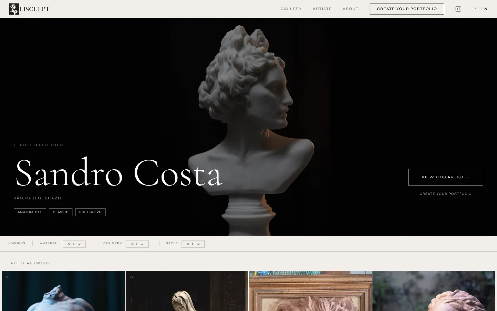
LiveLisculpt
A portfolio platform made only for sculpture. I researched the need with artists, modelled artworks on museum cataloguing standards, designed the product and built it end to end. Live at lisculpt.com, in Portuguese and English.
Read the case →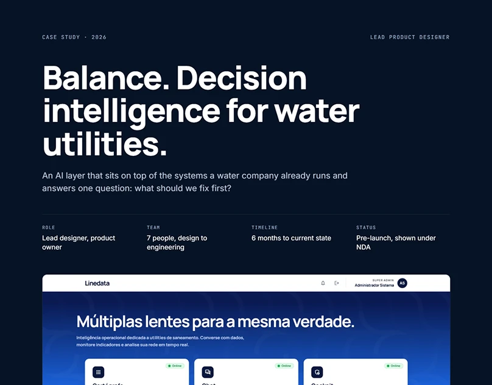
Pre-launchBalance
Decision intelligence for water and sanitation utilities. AI you can audit: every answer traces back to its data, agent and logic.
Read the case →for the
Amazon
Amazon health apps
Three telemedicine apps for remote Amazonian communities, designed with medical experts and engineers over a year of weekly delivery cycles.
Preview →WASTELAND_WARLORD / SYSTEM MAP
[01] SIMULATION CORE
[02] ENTITY & MODIFIER ENGINE
one type for statuses, conditions, traits
[03] WORLD STATE & ECONOMY
hex map, fog of war, brass, relic cells
[04] ENCOUNTER & EVENT ENGINE
15-rung attack ladder, range bands
[05] MEMORY & PERSISTENCE
HEALTH SCALES physical / mental / social [-20 .. +20]
ARCHETYPES 24 across hostile / neutral / settlement
Wasteland Warlord
A post-apocalyptic strategy RPG I design and build alone in Unity. The case is about systems architecture: how a large game design document becomes five engines, one modifier model and a working world map.
Read the case →How I work
One person carrying a product from question to production, with AI tools as the team that scales the work.
Research
Interviews, domain standards and real routines first. If a screen does not map to something a person does on a Tuesday morning, it does not ship.
Architecture
Data models, ontologies and system boundaries before pixels. Good structure is what lets a product grow without breaking.
Design
Interfaces, design systems and brand, built to carry dense information and still feel calm.
Ship
Code, deploys and iteration, orchestrating AI agents for the heavy lifting. This site is hand-built and hosted on GitHub Pages for the same reason.
Design foundation
Earlier UX and UI work for banks, government, health and retail. Full cases on Behance.
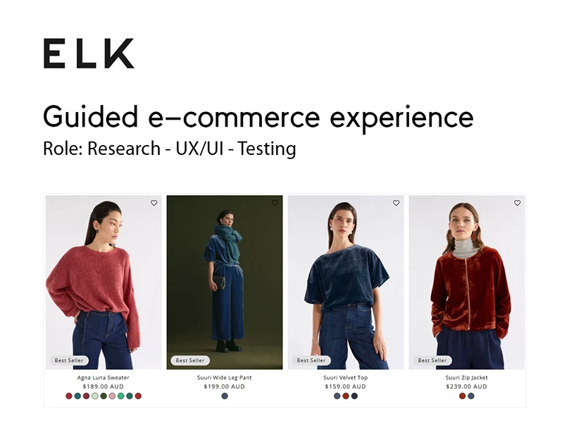
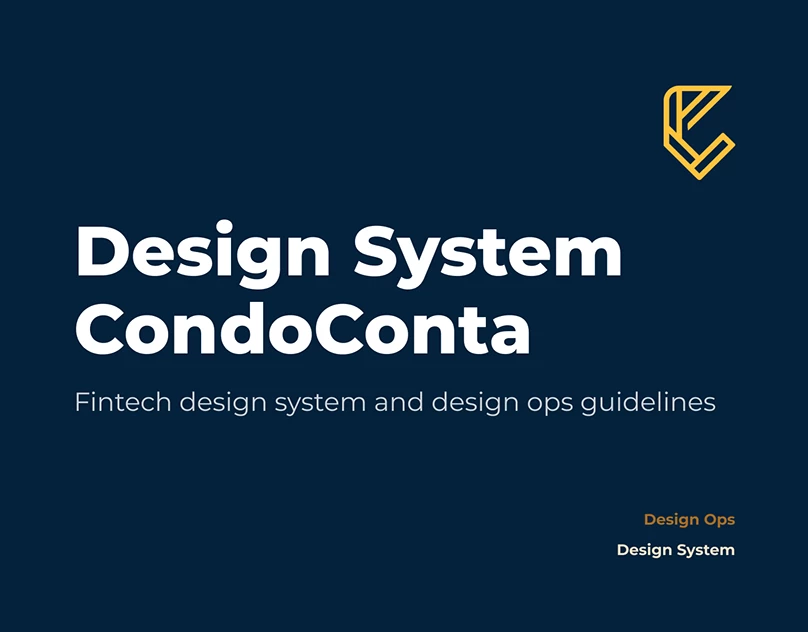
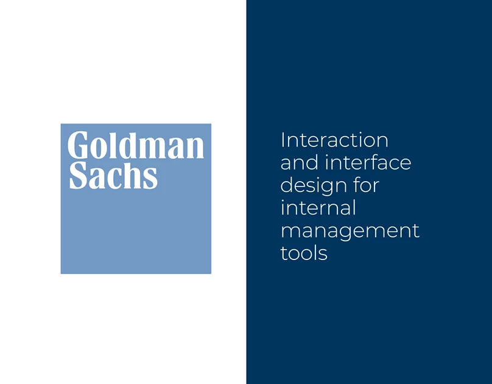
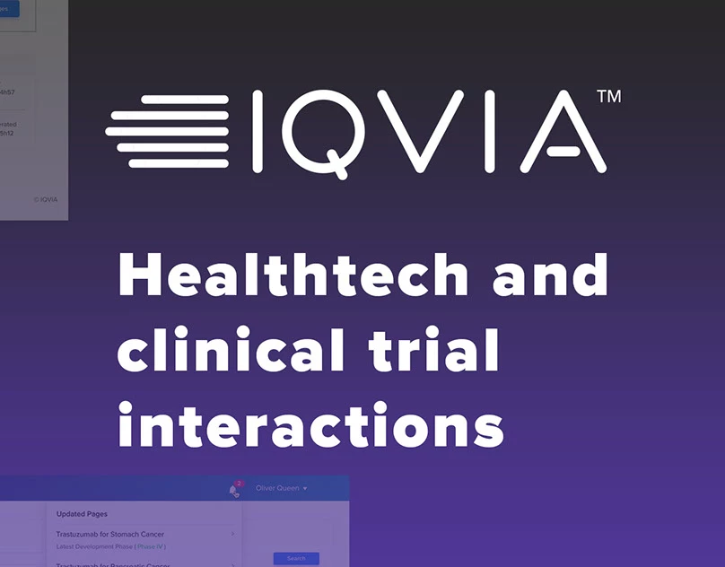
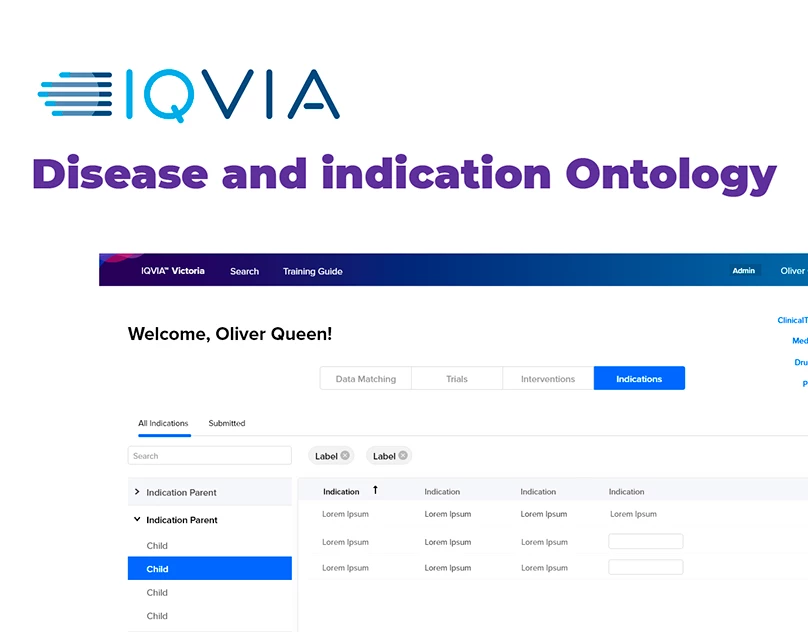
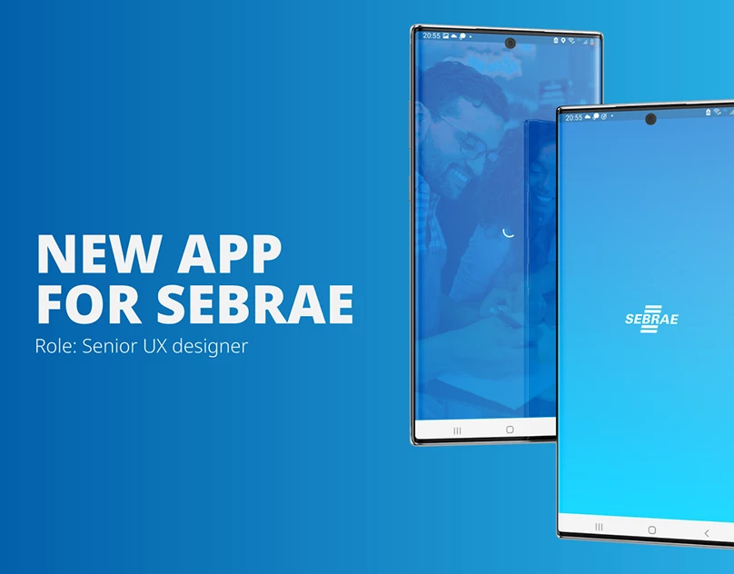
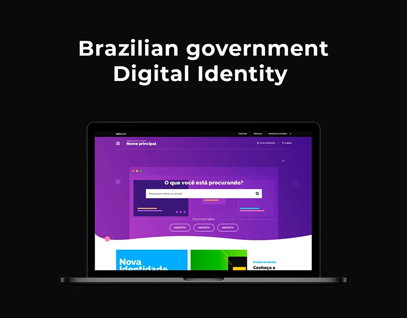
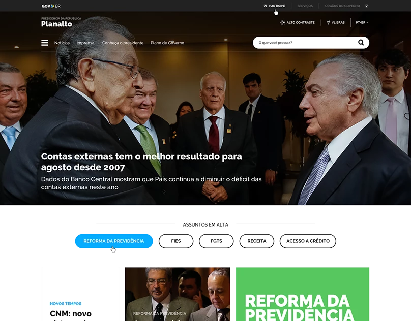
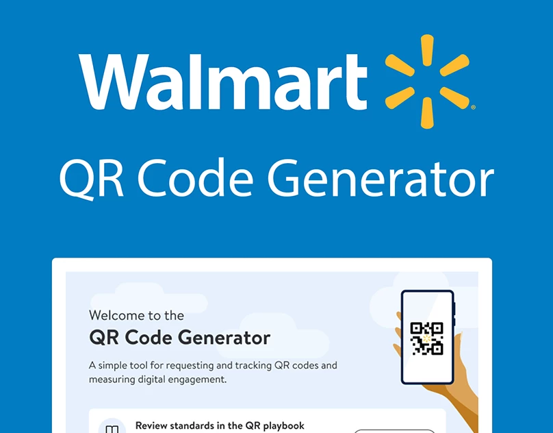
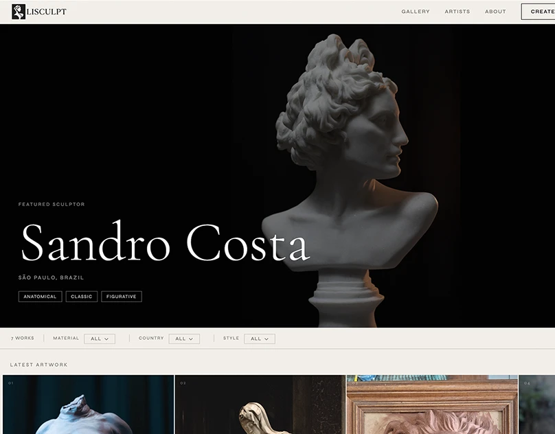
Prove it by building it
Tools are leverage. The work is judged by what ships and what people actually use.
I'm a designer from São Paulo who works across the whole product: research, information architecture, interface, brand and the code that puts it online.
My background is UX and UI for finance, health, government and retail. Today I lead products where AI does real work for people, and I build my own: Lisculpt for sculptors, and Wasteland Warlord, a game I design and develop alone.
- Product design and ownership, end to end
- AI product patterns: traceable answers, generated dashboards, natural-language data
- Information architecture and ontologies
- Design systems and brand expansion
- Front-end build and deploy (HTML, CSS, JS, Supabase, Unity)
- Game and systems design